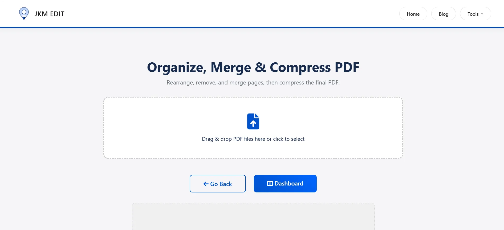
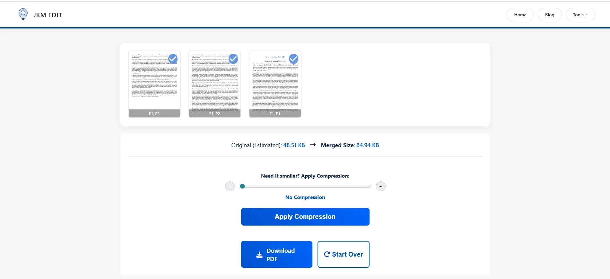

Discover the fastest, most secure way to combine your PDF documents seamlessly using intuitive online tools for better workflow management.
Written by JKM Edit Team
Published on May 16, 2026
10 min read
The fastest and most secure way to merge your PDF files into one simple PDF using online PDF merger tool
Introduction: Why PDF Merging is So Important Now Than ever
Today PDF have become the most commonly used file format. In business, PDFs are used for contracts and invoices. Students have to submit research paper and assignments. All task and assignments are required in PDF format. Even simple manuals are printed in PDF format. Many government entities require filling out of forms in PDF format.
One problem you will most likely have encountered is:
You have several PDF files and you need to combine them into one file.
Perhaps you scanned the document page by page. Maybe you downloaded your bank statements. Maybe your project report has several chapters. Maybe you need to submit all your certificates. One PDF merge tool helps you to make a single file.
Instead of keeping multiple documents, with one PDF merge tool you can combine several PDFs into one single, professional-looking document in just seconds.
JKM Edit Home's powerful and quick Merge PDF Tool is one of the best solutions available right now. Unlike many other options shambled with racing ads, painful registration and irrelevant restrictions, JKM Edit is all about simple, quick and private PDF solutions.
What Is a PDF Merge Tool?
Basically, a PDF merge tool is an online tool that helps you merge multiple PDF files into one PDF file.
Most websites allow you to rearrange pages, merge PDFs drag and drop with no quality loss, directly merge in a browser, and instantly download.
Many of today's browser-based tools are focused on privacy-first processing and no-upload workflow.
Typical issues people get stuck on without PDF merging
1. Sending multiple files becomes confusing
Picture you are applying to a job and uploading Resume.pdf, Certificate1.pdf, Certificate2.pdf, Experience.pdf with Application recruitment. Recruiters don't want to open more than one file. Merged PDF files are cleaner and more professional.
2. Large projects become hard to handle
When students or office workers work with multiple documents at the same time. Missing files, messy pages, chaotic sharing, and a very inconvenient printing will happen without merging the documents.
Today Most people are working directly on their smartphone. Handling a lot of pdf files on mobile is interesting only if we can really merge them online. That's why online merge tools (browser based tools) like JKM Edit Merge PDF Tool are really helpful.
3. Why PDF merge is handy
Clean documents
One merged file is easier to save, search, share, archive, and print. Exactly lack of confusion, instead of 20 files there is just one.
Better interface
The merged pdf looks professional. Companies can use merged pdf for proposals to clients, documents for lawyers, contracts, reports and even presentations. Students can use merged pdf for academic portfolio, assignment, etc.
Faster share
One attachment is much faster than uploading everything repeatedly. Merged pdf helps you save your time spent on attachments for email, WhatsApp, cloud storage, government portals, etc.
Save yourself the time
PDF merge saves your time. Instead of rename files, moving them to different folder, and uploading repeatedly, you just merge everything once and be done with it.
Unified digital work flow with updated merged pdf
Why People prefer online PDF Merge Tools
Desktop software is always being updated, takes up space, and requires permissions from the operating system.
None of those problems exist with online tools.
Today's online PDF tools have instant access, work anywhere on any device, are approved by processing with the browser, and have a significantly faster process, all without any software to install and keep updated.
How Our JKM Edit Merge PDF Tool Overcomes The Best PDF Tool Merging problem
1. User Friendly Interface
A lot of PDF Tools have complicated processes of navigation. It is filled with useless options and features. On our JKM Edit Merge PDF Tool Your only task is to simply follow these steps: Upload the files, Drag them in the desired order, merge on the spot and download the merged PDF file. No technical knowledge required.
2. Completely Browser Based
No need to download or install any software. You can just use here from your Browser on laptop, desktop, Android, iPhone, tablet and so on.
3. Efficient and Stable
Speed is everything. No one likes to wait for few minutes for a simple task. JKM Edit is very efficient too, so you can avoid the time consuming process of merging PDFs without any hassle.
4. Multiple PDF Ability
Merge notes, contracts, research papers, report, scanned pages, eBook and many more PDFs into one file at a time.
5. Free Easy Use
Many sites do have lotsof features which are locked behind a subscription cost. JKM Edit, we have created a user friendly environment for convenience. Here we understand that users need specifically a software which does not lock any kind of main features in the merge PDF process by doing aggressive premium tightening or unreasonable sign-up status.
6. All in One Productivity Platform
Unlike the others, single-sitesome have only one product, JKM Edit Home init with many category's like PDF tools, Image tools, Finance tools, Utility tools, File management tools etc. All in one place. Which has created a productive workflow and convenient environment for users.
Make your document one organizational work ready?
Stop using this confusing dozen of different files. Merge them to one in seconds.
Step-by-Step Tutorial: How to Merge PDF Using JKM Edit
Step 1 , Start Tool
Open the trusted official link: JKM Edit Merge PDF Tool.

Step 2 , PDF files upload
Upload all PDF reports you want to merge here. You can upload your two files, ten files, several reports, or separately scanned page from one page.
Step 3 , Arranging Order of files
Very important! The merged PDF will fully follow the order you choose. You can move file up, move file down, arrange file to into chapters, pages to in logical order, etc...
Step 4 , Merge
Click the merge button, and the system will take care of the rest. Merge may take only seconds depending on file size.
Step 5 , Download final stnd_pdf
Your final PDF instantly ready! Now you can share it, print it, upload it, archive it, submit it online, etc....

Watch Full tutorial: How to Merge PDF Files Using JKM Edit
If you prefer a visual guide, watch the one-stop video guide...Step-by-Step...
What You'll Learn...
How fast and easy it really is to combine your documents...
How to combine multiple documents securely...
Tips for drag and drop page ordering...
How to download and confirm your combined file
What are the common Real-Life Examples for PDF Merging?
Students
Students combine written assignments, certificates, internship reports, notes, research papers and more. One clean PDF makes their submissions look smarter.
Buisnesses
Companies merge financials, reports, proposals, contracts, client documents, etc. Merged PDF reduce team set up time drastically.
Governments
Lots of public portal require uploading photo proof, photo proof, address proof, certificates etc. Putting all of them into a single merged pdf reduces processing time drastically.
Freelancers/Designers
Creative work require client documents, sample creative work and client designer preview and also creative work portfolio. Merged PDF reduce client trust and improves work presentation drastically.
Feature Comparison
Feature
Traditional software
JKM Edit
Installation Required
Yes
No
Device Compatibility
Limited to OS
Cross-platform (Any OS)
Browser Access
Rare
Yes
Quick Usage
Moderate (Launch time)
Fast & Instant
Mobile Friendly
Sometimes
100% Yes
Easy Interface
Often clutttered
Simple & Clean
Cost
Often Paid/subscription
Free Access
PDF Tools Privacy and Security
One of most significant concerns for many people about uploading to a PDF tool is that it might compromise the privacy of your documents. Right now, there is no shortage of private legal documents, financial records, certificates, business contracts, and more that people upload.
As one looks for a new PDF tool, you'll note that most new tools are focusing on a privacy-preserving platform that processes either directly in the browser, or deletes the document after it has been processed. Another way JKM edit highlights the secure and browser based feature of our platform is by ensuring your sensitive workflow is always safe.
Merging PDF on a mobile device Is a Necessity
Today, a huge percentage of users manage documents primarily through their mobile devices. This can include students, people who work remotely, small business owners, local deliver partners and freelancers.
Therefore, an online mobile responsive tool like JKM Edit Merge PDF Tool empowers individuals to combine documents on the move, from anywhere, at anytime.
Best Practices for Merging PDFs
Remember keep file names: name your files so they are in logical order, delete any heh, and shift files around as needed (e.g.: Chapter-1.pdf, Chapter-2.pdf).
Make sure final order is correct: check the order of pages prior to completing the document so the finished file isn't confusing.
Make the combined PDF file smaller: you may wish to compress your final PDF if you are sending it by email. If you're looking for another PDF tool, see JKM Edit Home.
Check your final document: ensure the file you are placing in the final document is not blurry. Your final product won't be blurry if you're inputting clear pages.
The Future of Online PDF Tools
The future of online productivity tools is faster browser usage, AI-assisted applications, private cloud-independent tools, privacy-first methods and mobile-first apps. Most users don't actually care about overly-complicated enterprise software and want a simple and intuitive solution. That's why introducing JKM Edit – the best solution for modern users.
Frequently Asked Questions (FAQs)
Yes, using modern online tools like JKM Edit, you can merge multiple PDF files completely free without any hidden charges or premium subscriptions.
Absolutely. JKM Edit operates entirely in your mobile browser, allowing you to combine PDF files on any Android, iPhone, or tablet device instantly.
No. A professional PDF merge tool retains the original resolution, formatting, and quality of your individual files when combining them into a single document.
Yes, JKM Edit prioritizes user privacy. Documents are processed securely, ensuring your sensitive data remains protected during the workflow.
Yes. Before finalizing the merge, you can drag, drop, and rearrange the order of your files to ensure the final document flows exactly how you want it.
Final Thoughts
Merging pdf may provide little use, but help solve a range of daily workflow challenges in our digital life. Whether you're a student, freelancer, business owner, office worker or applicant to gov, later- a day you might have a need to merge document professional
This is where Your tool JKM Edit Merge Pdf Tool comes in great. No more time waster searching for complciated and expensive synbscriptions, but instead you can easily take the merge PDF from the brower direct and simple workflow.
If you're looking for simple, quick and organized way to manage your PDF, go to JKM Edit Home and expand your document workflows today.
Your Document Solution
Start Merging PDF Files Now
Ready To simplify your documents?
Use the easiest, fastest and most secure way to combine multiple PDF files into the one file, no need to download any software.